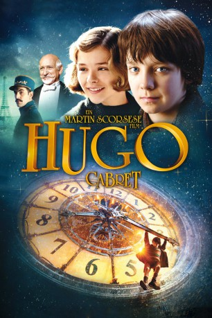
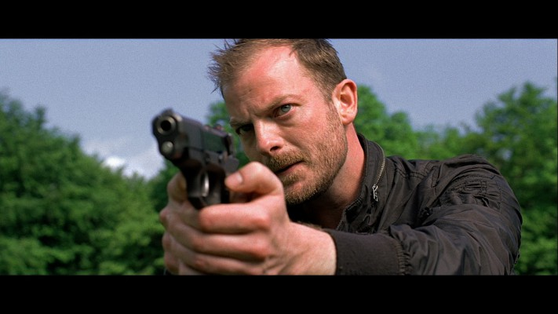
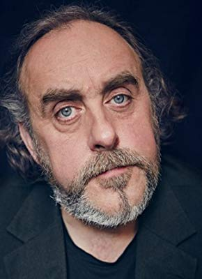

#529 Hugo Cabret
Alternativ: Hugo
Auszeichnungen: 5 Oscars gewonnen für 6 Oscars nominiert 1 GoldenGlobes gewonnen 2 BAFTA-Awards gewonnen
 
 IMDB-Wertung: 7.5 / 10
IMDB-Wertung: 7.5 / 10  Metascore: 83
Metascore: 83 
Die Geschichte spielt im Jahr 1931 unter den Dächern von Paris. Der 12-jährige Waisenjunge Hugo ebt alleine in den Gemäuern eines gigantischen Pariser Bahnhofs. Seit sein Vater, ein talentierter Uhrenmacher, bei einem Brand ums Leben gekommen ist, versteckt sich Hugo auf dem Dachboden hinter einer großen Bahnhofsuhr. Statt zur Schule zu gehen, muss er die Arbeit seines Onkels übernehmen: Täglich macht er einen Kontrollweg durch die großen Hallen, um alle Bahnhofsuhren in Schuss zu halten und aufzuziehen. Dabei muss er sich vor dem strengen Stationsvorsteher in Acht nehmen, der keine Chance auslässt, seinem Geheimnis auf die Spur zu kommen.
Jahr: 2011
Dauer: 126 Minuten
FSK: 6
Land: USA Studio: Paramount PicturesTonspuren: DD5.1 - ,
Untertitel:
Auflösung: 1080p (1920x1080) Größe: 7434 MB
Genre: Abenteuer, Drama, Familie, Fantasy, Mystery, Liebe
Regisseur:  Martin Scorsese
Martin Scorsese
Drehbuch: John Logan, Brian Selznick
Soundtrack: Howard Shore
Darsteller:
 Ben Kingsley als Georges Méliès
Ben Kingsley als Georges Méliès Sacha Baron Cohen als Station Inspector
Sacha Baron Cohen als Station Inspector Asa Butterfield als Hugo Cabret
Asa Butterfield als Hugo Cabret Chloë Grace Moretz als Isabelle
Chloë Grace Moretz als Isabelle Ray Winstone als Uncle Claude
Ray Winstone als Uncle Claude Emily Mortimer als Lisette
Emily Mortimer als Lisette Christopher Lee als Monsieur Labisse
Christopher Lee als Monsieur Labisse Helen McCrory als Mama Jeanne
Helen McCrory als Mama Jeanne Michael Stuhlbarg als Rene Tabard
Michael Stuhlbarg als Rene Tabard Frances de la Tour als Madame Emilie
Frances de la Tour als Madame Emilie- Richard Griffiths als Monsieur Frick
 Jude Law als Hugo's Father
Jude Law als Hugo's Father Kevin Eldon als Policeman
Kevin Eldon als Policeman Gulliver McGrath als Young Tabard
Gulliver McGrath als Young Tabard- Edmund Kingsley als Camera Technician
-  Max Wrottesley als Train Engineer
- Frederick Warder als Arabian Knight
- Christos Lawton als Arabian Knight
- Ed Sanders als Young Tabard's Brother
- Ben Addis als Salvador Dali
 Mihai Arsene als French Fisherman , uncredited
Mihai Arsene als French Fisherman , uncredited Lasco Atkins als Talent Scout , uncredited
Lasco Atkins als Talent Scout , uncredited Graham Curry als Railway Porteur 71 , uncredited
Graham Curry als Railway Porteur 71 , uncredited- Vera Horton als Local Woman , uncredited
- Elliot James als Gentleman , uncredited
- Ed Pearce als Business Man , uncredited
 Gino Picciano als Worker , uncredited
Gino Picciano als Worker , uncredited Michael Pitt als Projectionist , uncredited
Michael Pitt als Projectionist , uncredited Martin Scorsese als Photographer , uncredited
Martin Scorsese als Photographer , uncredited- Brian Selznick als Party Guest , uncredited
- Shaun Aylward als Street Kid
- Emil Lager als Django Reinhardt
-  Angus Barnett als Theatre Manager
- Marco Aponte als Train Engineer Assistant
- Ilona Cheshire als Café Waitress
- Francesca Scorsese als Child at Café
- Emily Surgent als Child at Café
- Lily Carlson als Child at Café
- Tomos James als Arabian Knight
- Terence Frisch als Circus Barker
- Max Cane als Circus Barker
- Frank Bourke als Gendarme
- Stephen Box als Gendarme
- Robert Gill als James Joyce
- Catherine Balavage als Girl in Cafe , uncredited
- James Currie als Parisian in Cafe , uncredited
- Amanda Dyar als Train Station Pedestrian , uncredited
- Eric Haldezos als Policeman , uncredited
- Lorenzo Harani als Guest at the gala Méliès , uncredited
- Kostas Katsikis als Business Man , uncredited
Datei: X:\2011(G-M)\Hugo Cabret (2011, FSK6, 1920x1080).mkv seit 03.03.2015
Festplatte: HD 2011(G-Z)
 Es gibt insgesamt 100 Filme in der Gruppe '2011(G-M)'
Es gibt insgesamt 100 Filme in der Gruppe '2011(G-M)'